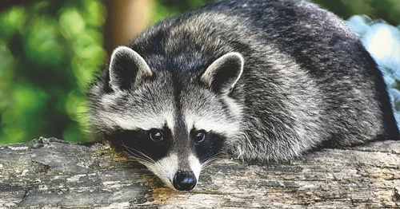

Although they have thrived in sparsely wooded areas in the last decades, Raccoons depend on vertical structures to climb when they feel threatened. Therefore, they avoid open terrain and areas with high concentrations of beech trees, as beech bark is too smooth to climb.Tree hollows in old oaks or other trees and rock crevices are preferred by Raccoons as sleeping, Winter and litter dens. If such dens are unavailable or accessing them is inconvenient, Raccoons use burrows dug by other mammals, dense undergrowth or tree crotches. In a study in the Solling range of hills in Germany, more than 60 Percent of all sleeping places were used only once, but those used at least ten times accounted for about 70 percent of all uses.
Since amphibians, crustaceans, and other animals around the shore of lakes and rivers are an important part of the Raccoon's diet, lowland deciduous or mixed forests abundant with water and marshes sustain the highest population densities.
